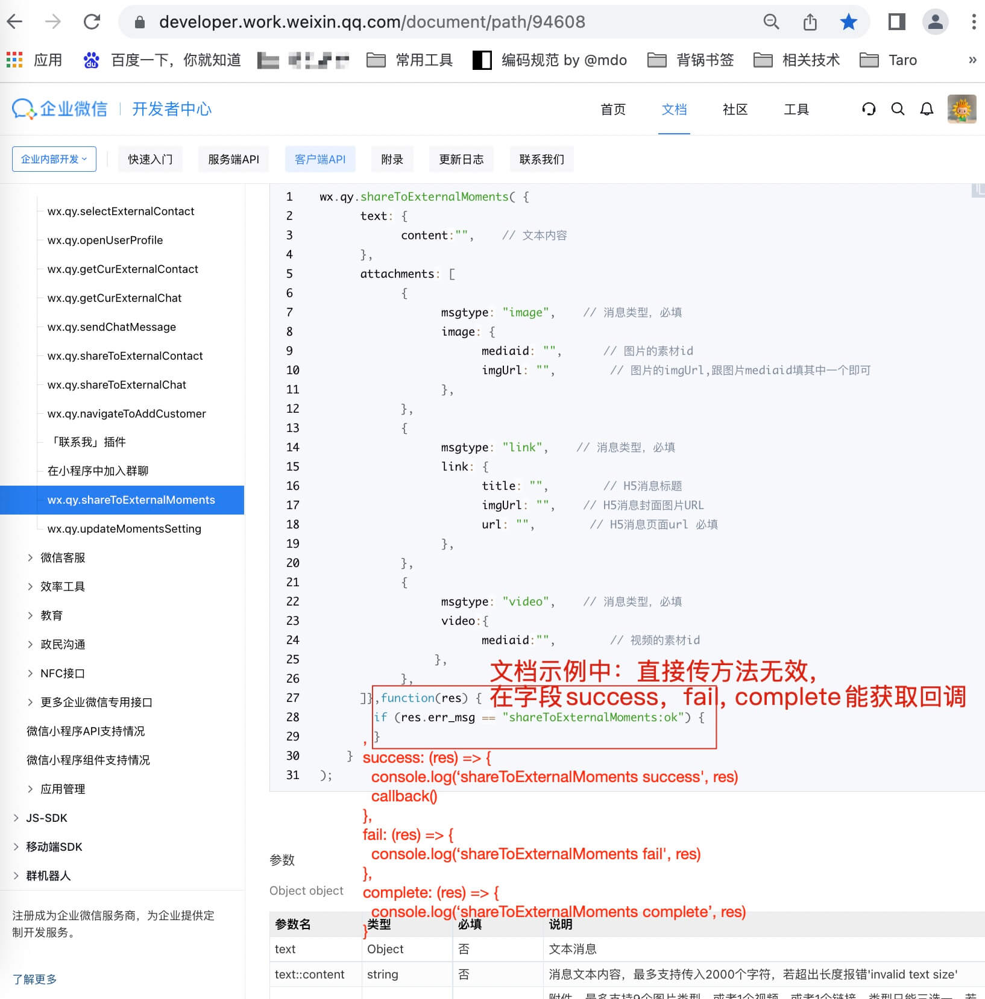
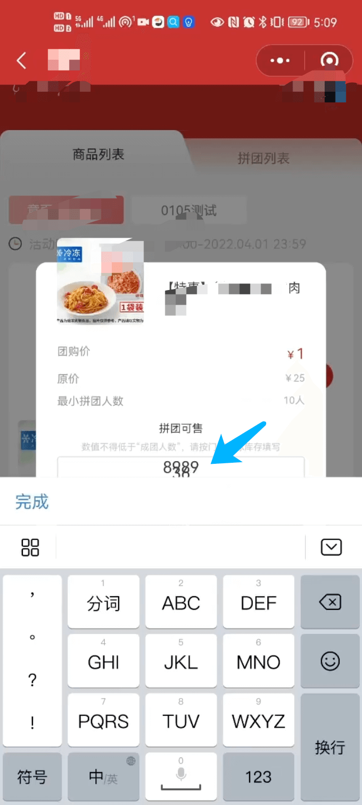
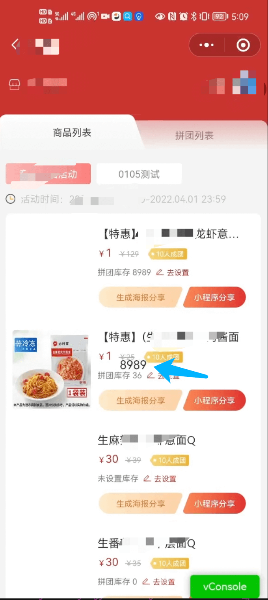

记录背景
接触企微小程序也大概有一年多了，
一直想要找时间想把开发企微小程序的一些相关知识复盘一下，
整理之后，作为技术积累。
企微小程序体验版不同分享渠道的体现
企微小程序是有两套体验版的：
一是通过官方文档说明的，
通过小程序右上角胶囊按钮的分享，
点击配置体验版，以邀请体验版的形式发出来的体验版。
二是通过开发工具点击上传按钮，
通过小程序后台配置小程序的体验版，
以企业微信扫描这个体验版二维码即可进入体验版。
需要说明的是，这两套体验版是隔离的，可以部署两套代码，给测试、产品同学同步测试验收。
同时，这两套体验版的体验权限设置也是有区别的：
企微邀请体验版的体验权限，是在邀请的时候设置的；
通过扫体验版二维码的体验权限，是在小程序后台成员管理=>体验成员处设置的。
PS：不同企业，同一个企微小程序，以邀请体验版的形式发出来的体验版也是相互隔离的。
企微邀请体验版的生效周期
在企微邀请体验版的时候，一定要记住点击更新版本按钮。
不然分享出去还会是以前的老版本。
在企微邀请体验版的时候，如果调整体验权限名单，那么体验版就会自动更新到当前的模拟器的开发版本。
等效于点击了更新版本按钮。
点击体验链接时候，报错“打开失败 内部错误”
疑似企业微信自身 bug。
解决方法：开发者工具重新点击预览，扫码后，重新配置体验版，
在配置小程序体验版页面的时候，
一定先等页面完全加载完毕后，即上方加载进度条加载完毕，
才可以点击“更新版本”。
为保险起见，第一次只邀请给自己查看。如能够成功打开，再分享一次给大家。如不成功则重复该步骤。
wx.saveImageToPhotosAlbum API 踩坑
通过企微邀请体验版进入，
没有小程序后台体验权限的账号，安卓手机调用保存相册 API，会保存白色图片。
没有小程序后台体验权限的账号，苹果手机则一切正常。
wx.saveImageToPhotosAlbum API 踩坑
保存图片需要企业微信对相册授权全部权限。否则即使保存成功，也会返回报错信息。
开发者工具调用 wx.qy.login 报 invoke result:qy.login,qy.login:fail，真机正常
确认自身网络环境，如网络环境正常，则可能微信 api 挂掉了。坐等官方修复。
wx.qy.shareToExternalMoments API 踩坑
发布人可以通过这个接口无限制发布到朋友圈，不过一天内，客户只能看到 3 条。
如果发布人手动发多条，一天内，客户也只能看到 3 条。
这个应该是企微的自身设定。
wx.qy.shareToExternalMoments API 回调方法踩坑
官方文档是通过传入第二个参数来作为方法的回调，不过实测毫无效果。
通过查询社群帖子遇到大佬帮忙解惑。
跟大多数微信 api 的机制相似，也是在传入对象的 success,fail,complete 这些字段以实现对应的回调。
其实如果文档不写传入第二个参数示例代码反而不会被带偏，这个就很是坑爹了。

弹窗内有 Input ，输入后，关闭弹窗 Input 输入内容不消失
目测为企微小程序存在的 bug，同样代码放到微信小程序没有复现。
异常情况如下图所示：

